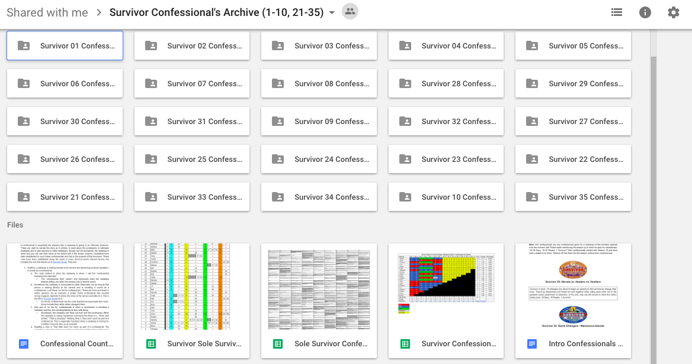
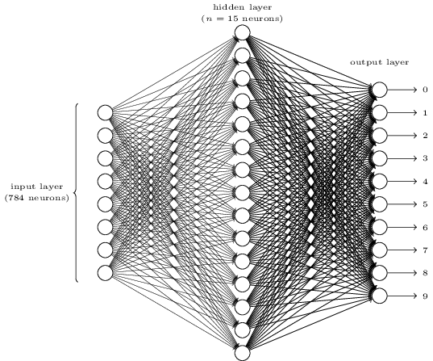
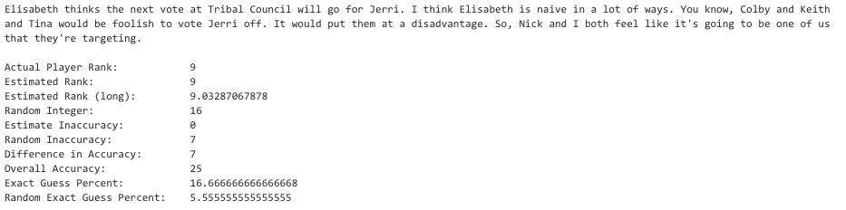
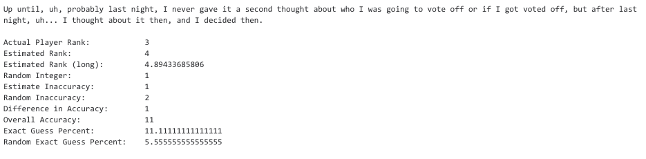
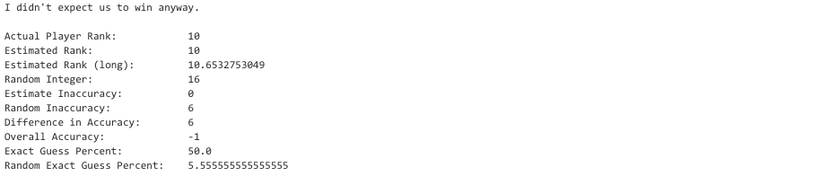

Predicting The Results of "Survivor"
Our project uses a Bag of Words model to predict a player’s final rank in the reality TV show "Survivor" based off their confessionals. Its success far exceeds our baseline (1/18) and also gets close to the actual rank (far more accurately than a random guess).
Data Source
Our training data was sourced from a Google Drive Folder created by Ismael E. Emmanuelli which included all of the confessionals from "Survivor" in seasons 1-10 and 21-34. It included numerous analysis files and the end ranks of each contestant in those seasons.
Data Cleaning

We adapted these Google Docs + Google Sheets files into .txt and .csv files after pfd file reader was inconsistent and more complex. We tried implementing re and bs4 for cleaning original files, but ended up manually cleaning extra pictures and text from original files.
Our actual cleaning code removes nltk stopwords except “between” and “against” (we believe these words are important in correlating results with confessionals)
Training Our Neural Network

We briefly investigated implementing word embedding, but eventually settled on Bag of Words as a training methodology.
Training Method Code Stats:
Neurons: 100
0.0001 alpha
Epochs: 1000
Input Array Dimensions: 10570 x 8687
Run Time: 28.4 minutes
Testing Our Neural Network



- For testing, we initially wrote our own sentences. Later, we randomly omitted one sentence for every person from the training data, and tested the program using this sentence to see how the predicted ranking matched up with the actual.
- Initially, the program output a list of each rank and a corresponding likelihood. The ordering of these ranks was almost always identical, no matter what data we tested it with. We speculated that it got caught in the local minima, so we optimised training variables for more varied results. We implemented a weighted average system to convert values into rank. We mitigated technical glitches by setting a minimum commentary of 500 words. We omitted any commentary that did not contain 500 words.
- Our final version's estimations are (on average) within ~4.7 ranks of the actual, and are ~1.45 ranks better than random guesses.
Special Thanks
We want to extend gratitude to Professor Eugene Charniak (an expert from Brown University on natural language processing and also the teacher of Brown's deep learning course) for discussing the project with us over the phone, and giving us valuable input on how to improve our project. Additionally, we want to thank Professor Sasha Rush (A professor at Harvard University whose research spans both machine learning and natural language processing) who gave us extensive feedback on our code through email correspondence.